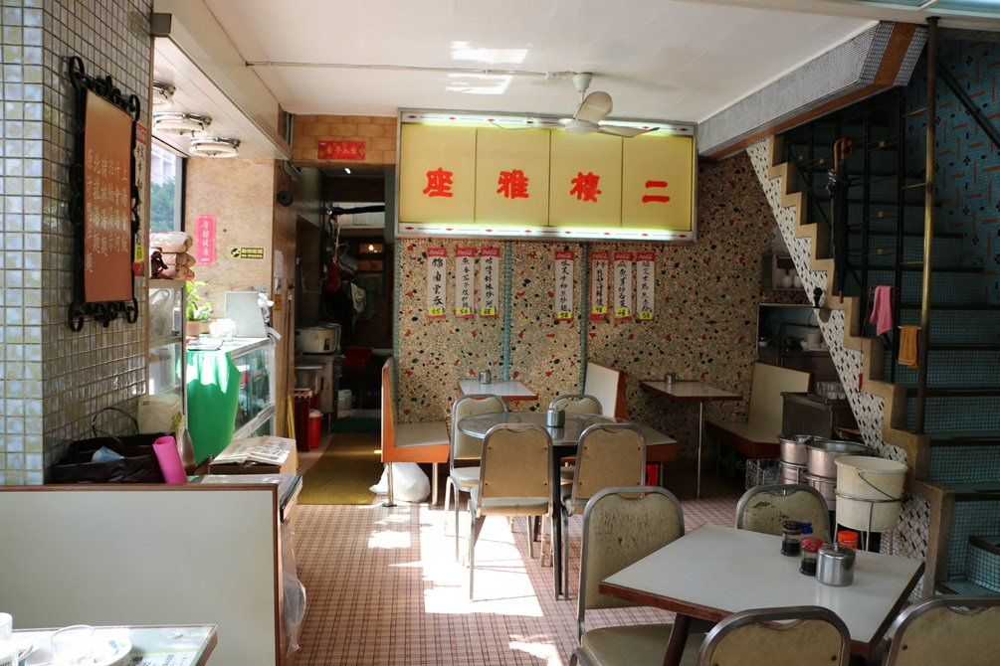
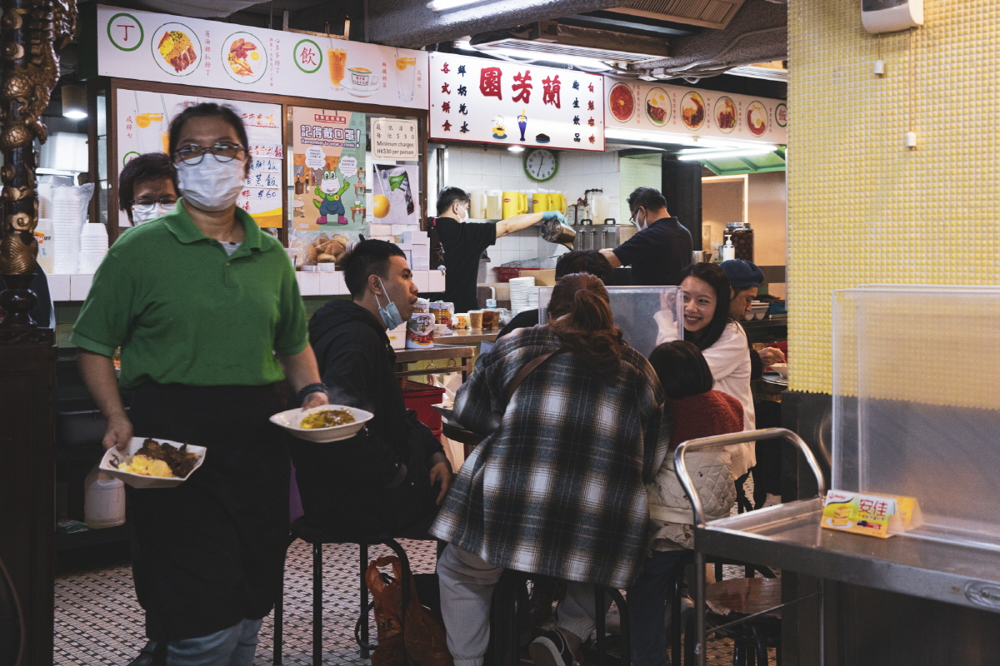
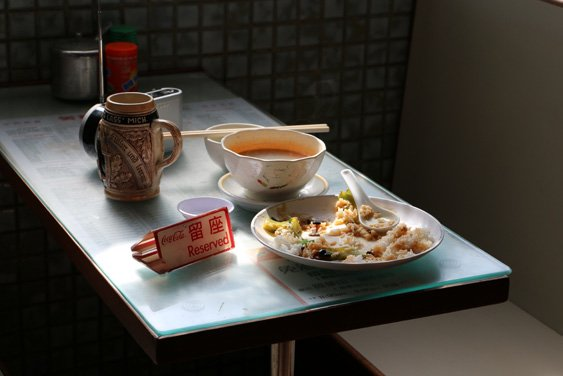
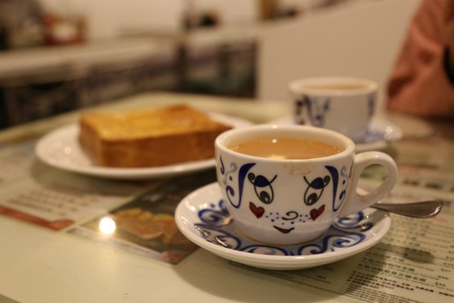

차찬탱이란?
차와 식사를 함께 할 수 있는 곳이라는 뜻을 가지고 있다.
차찬탱에서는 다양한 동서양의 음식을 저렴한 가격으로 제공한다.
가벼운 식사를 비롯해 디저트와 음료 또한 접할 수 있어, 동서양이 공존하는 홍콩만의 독특한 분위기를 느낄 수 있는 대중식당이다.

과거 홍콩이 영국의 영향을 받던 시절,
홍콩에는 많은 서양인과 동양인이 공존하고 있었다.

밥이나 국수를 주식으로 하는 동양인과 달리,
서양인들의 주식은 빵으로,
두 나라의 식문화에는 큰 차이가 있었다.


이러한 차이점 때문에
서양인과 동양인은 각각 나뉘어져
따로 식사를 해야한다는 번거로움이 존재했다.
이를 해결하기 위해,
동서양의 음식들을 한 공간에서 간편하게
먹을 수 있도록 만든 것이
바로, 차찬탱 문화의 시작이다.
